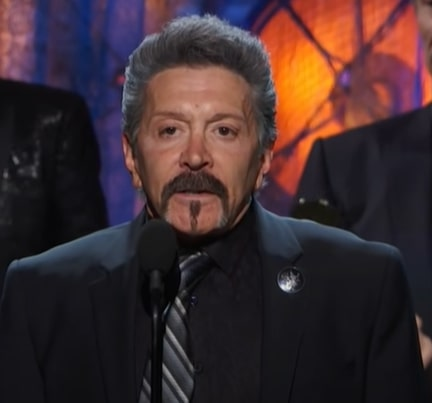

目次
概要
1984年にアルバム「BON JOVI」でデビュー。同年、SUPER ROCK 84 IN JAPANに出演のため初来日。この年、日本では 1985年には「7800°Fahrenheit」をリリース。このアルバムには、日本のファンの感謝を込めて「TOKYO Road」という曲が収録されている。 1986年になると、3rdアルバム「Slippery When Wet」をリリース。全世界で2800万枚を売上げ、 シングルカットされた楽曲「Livin' On a Prayer」、「You give a Love a Bad Name」は全米1位を獲得する。 ボン・ジョヴィは一気に頂点へと登り上がる。1988年には4thアルバム「New Jersey」をリリース。 全米・全英１位を獲得し、シングルカットされた楽曲の多くも1位を獲得する。
1990年、455日間、全232公演、全世界37ヵ国のワールドツアーを終了する。世界で最も有名なロック・バンドとなる一方で、肉体的・精神的疲労した状態になり、不仲説・解散の危機 に瀕する。ボン・ジョヴィはしばらくの間バンド活動を休止する。 1992年には「Keep The Faith」、1994年に初のベストアルバム「Cross Road」をリリースする。しかし、ベースの アレック・ジョン・サッチが脱退。1996年に活動休止。
2000年に入ると活動再開し「Crush」をリリース。It' My Life がボン・ジョヴィの大ヒット曲となる。
2006年には「UK音楽の殿堂」 入りをしている。
2007年には「Who Says You Can't Go Home」でグラミー賞のカントリー部門で受賞。
2013年からリッチー・サンボラがツアー不参加、事実上の脱退
2016年にはフィルｘとヒューマクドナルドを正式なメンバーに迎える。
2018年には「ロックの殿堂」入り。
2020年には「2020」をリリース
BON JOVIのメンバー(メンバーの画像は準備中)
メンバー
現在のメンバーは、結成からのオリジナルメンバーのジョン・ボン・ジョヴィ(Vo)、 デヴィッド・ブライアン(Key)、ティコ・トーレス(Drs)の３名とフィルX(Gt)、ヒュー ・マクドナルド(B)で構成されています。
オリジナルメンバーのアレック・ジョン・サッチ(B)は1994年に脱退、同じくオリメンのリッチー・サンボラは2013年のツアーから参加しておらず事実上脱退扱い
ボン・ジョヴィのメンバーは、結成当時の「ジョン・ボン・ジョヴィ、リッチー・サンボラ ティコ・トーレス、デヴィッド・ブライアン、アレック・ジョン・サッチ」の5人が有名である。
(Vo)ジョン・ボン・ジョヴィ(Jon Bon Jovi)

(写真は、Lunchbox LP氏による"Watch Bon Jovi 2013 Because We Can Tour Live on Walmart Soundcheck" ライセンスは "CC BY 2.0" CC BY 2.0に基づく)
1962年3月2日(58歳)生まれ。アメリカ、ニュージャージー州出身。本名はジョン・フランシス・ボンジオヴィ・ジュニア。愛称はジョン。 読みやすさを考えて芸名としてBon Joviを使う。バンドの名前は彼の名前が由来である。
ボーカル担当である。当初から甘いルックスで人気を博していた。近年のジョンをみるといい老け方をしているように見える。リッチーが脱退して以降、バンドのビジュアルを意識しなくなっためか、近年のボン・ジョヴィは白髪が目立つ。
彼はガラガラ声のハスキーボイスが特徴である。彼は喉の負担を減らすために ライブではキーを下げて歌っている。
ボン・ジョヴィの作詞・作曲を行っており、その作詞・作曲のセンスは評価されている。
彼はシンガーソングライターのブルース・スプリングスティーンを敬愛している。
(Gu)フィルX(Phil X)

(写真は、Dustin Jack氏による"Phil_Xenedis_2013.jpg" ライセンスは "CC BY-SA 3.0" CC BY-SA3.0 に基づく)
{kind=link}
1966年3月10日(54歳)生まれ。カナダ・オンタリオ州出身。愛称はフィル。ボン・ジョヴィのギタリスト。2011年にリッチーサンボラ(Gt)がアルコール依存症のリハビリ のリハビリで活動を休んだ際、フィルが代わりに参加した。その後、2013年に突如ツアーを離脱したリッチーサンボラの代役として 参加。リッチー・サンボラの脱退後、2016年に正式なメンバーに昇格。
(Dr)ティコ・トーレス(Tico Torres)

(写真は、David Shankbone氏による"Tico Torres at the 2009 Tribeca Film Festival for the premiere of When We Were Beautiful" ライセンスは "CC BY 3.0" CC BY 3.0 に基づく)
1953年10月7日(67歳)生まれ。ニューヨーク出身のキューバ系アメリカ人。愛称はティコ。ボン・ジョヴィ結成当時から のオリジナルメンバーでドラマーである。テクニックを持ちながらも、派手なドラムソロは一切することはなく、 堅実なプレイである。元々はギタリストだったらしい。彼の趣味は絵描きや地元でゴルフをすること。絵描きについては 彼は画家・デザイナーとしても有名である。
(Key)デヴィッド・ブライアン(David Bryan)

(写真は、David Shankbone氏による"David Bryan at the 2009 Tribeca Film Festival for the premiere of When We Were Beautiful" ライセンスは "CC BY 3.0" CC BY 3.0 に基づく)
1962年2月7日(58歳)生まれ。ジョンと同じアメリカニュージャージー州出身。愛称はデヴィッド。キーボーディストとして活躍している。 ボン・ジョヴィ結成当時からのメンバーでもある。舞台俳優・俳優としても活躍している。
(Ba)ヒュー・マクドナルド(Hugh McDonald)

(写真は、Dustin Jack氏による"en:Hugh McDonald on stage live at Dublin May 2006." ライセンスは "CC BY-SA 3.0" CC BY-SA3.0 に基づく)
1950年12月28日(69歳)生まれ。アメリカペンシルベニア州・フィラデルフィア出身のベーシスト。メンバー最高齢。愛称はヒュー。 1994年、バンドを脱退したベーシスト、アレック・ジョン・サッチの後任としてティコ・トーレスの推薦でサポートメンバーとして 加入。しかし、ジョンの意向で以降2016年になるまで正式メンバーに昇格することはなかった。そのため、1994年から2016年までのアルバム ジャケットには彼の写真は写っていない、MVにもメインで映ることはなかったなど、結構不遇である。
(Gu/Vo)リッチー・サンボラ(Richie Sambora)

(写真は、Justin Higuchi氏による"RSO (Richie Sambora + Orianthi) 01/19/2017 #4" ライセンスは "CC BY 2.0" CC BY 2.0に基づく)
1959年7月11日(61歳)生まれ。アメリカニュージャージー州出身のギタリスト。ボン・ジョヴィの元ギタリスト ボン・ジョヴィの前身のバンドのギタリストであったデイヴ・セイボを追い出す形で加入。愛称はリッチー。
デビュー当時から美形ギタリストとして人気であった。ライブでの高音コーラス、哀愁のあるギター演奏に定評がある。ライブでは曲によっては ジョン・ボン・ジョヴィに変わって、彼がボーカルをすることもある。デビューから彼が脱退するまでの間、曲の作詞・作曲をジョン・ボン・ジョヴィ(Vo)と共に 行っていた。
重度のお酒好きであり、過去にはアルコール依存症の症状が重くなりリハビリ施設に入所経験がある。
2013年のツアーから不参加が続き、2015年にバンドの脱退が発覚。 ボン・ジョヴィを脱退して以降、ギタリストのオリアンティと作曲活動やライブの共演をしている。
憧れのギタリストはエリック・クラプトンである。
(Ba)アレック・ジョン・サッチ(Alec John Such)

1951年11月14日(69歳)生まれ。アメリカ、ニューヨーク出身。愛称はアレック。1994年「Cross Road」を最後にバンドを脱退。 脱退理由については不明だが、彼自身が情熱を失ったというか、他にもやりたいことがあったといわれている。 脱退後は念願だったバイクショップをオープンさせた。
ボン・ジョヴィの歴史
- 1984
- アルバム「Bon Jovi」でデビュー。「SUPER ROCK '84 IN JAPAN」出演のため来日
- 1985
- 2ndアルバム「7800°ファーレンハイト」をリリース。初の単独日本公演を行う
- 1986
- 3rdアルバム「Slippery When Wet」をリリース。初の全米No1を獲得。8週連続全米NO1 トータルセールスは2800万枚
- 1988
- 4thアルバム「NEW JERSEY」をリリース。全米No1を獲得
- 1990
- バンド活動休止。ソロ活動に専念。ジョンがソロアルバム「Blaze Of Glory」をリリース。
- 1991
- リッチーがソロアルバム「Stranger In This Town」をリリース。
- 1992
- バンド活動を再開し、5thアルバム「Keep The Faith」をリリース。
- 1994
- BON JOVI デビュー10周年。ベストアルバム「Cross Road」をリリース。全世界で1000万枚を超える。 しかし、ベーシストのアレック・ジョン・サッチが脱退。後任ベーシストはなしで、現ベーシストのヒュー・マクドナルドがバンドを サポートすることになる。
- 1995
- 6thアルバム「These Days」をリリース。
- 1996
- バンド活動の休止を宣言する
- 1997
- リッチーが日本の反町隆史に「Forever」を提供し、レコーディングにも参加する。
- 1998
- ジョンがソロ名義で映画「アルマゲドン」のサウンドトラック用に曲を提供
- 1999
- バンド活動を再開する
- 2000
- 5年ぶりとなる7thアルバム「Crush」をリリース。
- 2001
- 初のライブアルバム「One Wild Night」をリリース
- 2002
- 8thアルバム「Bounce」をリリース。
- 2003
- PAT LEONARDをプロデューサーとして迎えたベストアルバム「This Left Feels Light Back At The CrossRoad」を リリース。
- 2004
- デビュー20周年とトータルセールス1億枚突破を記念し、コンピレーションアルバム「100,000,000 Bon Jovi Fans Can't Be Wrong」をリリース。
- 2005
- 9thアルバム「Have A Nice Days」をリリース。また、世界同時に行われたチャリティーコンサート「LIVE 8」に出演
- 2007
- 10thアルバム「Lost Highway」をリリース。第49回グラミー賞において「Who Says You Can't Go Home」が 最優秀カントリー・コラボレーション賞を受賞。
- 2009
- ドキュメンタリー映画「When We Were Beautiful」が公開。11thアルバム「The Circle」をリリース。
- 2010
- ベストアルバム「Greatest Hits」をリリース
- 2011
- 東日本大震災のチャリティー・アルバム「Songs For Japan」に参加 リッチーがアルコール依存症のためリハビリ施設に入所。フィルXが代役として参加。
- 2013
- 12thアルバム「What About Now」をリリース。この年のツアーからリッチーが不参加となる。
- 2014
- 4thアルバム「New Jersey」のデラックスエディションをリリース。また、ジョンのインタビューで でリッチーの事実上の脱退が発覚
- 2015
- 13thアルバム「Burning Bridges」をリリース。新曲と未発表曲で構成されている。
- 2016
- 14thアルバム「This House Is Not For Sale」をリリース。 サポートメンバーだったベーシストのヒュー・マクドナルドとギターのフィルXを正式メンバーに昇格させる。
- 2018
- 2018年度の「ロックの殿堂」入りを果たす。式典ではリッチーとアレックが参加し、彼らと共にパフォーマンスをする
- 2020
- 4年ぶりとなる15thアルバム「2020」をリリース。
日本人気・交流
ボン・ジョヴィと日本はデビュー当時から縁が深い国であり、結成から30年以上経っても日本のファンは多い。 バンドがデビューした1984年には、「Super Rock 84 in Japan」に出演するために初来日している。 翌年リリースした「7800°Fahrenheit」に収録されている「Tokyo Road」は日本のファンへの感謝の意を 示した曲である。この頃、ボン・ジョヴィは日本＆ヨーロッパではヒットしていた一方、アメリカでは無名の バンドだったので、日本には感謝してもしきれないのかもしれない。
驚くことに、バンド初の単独公演を行った国も日本である。それまでは、KISSやスコーピオンズといったバンドのツアー をサポートしていたためである。
日本でボン・ジョヴィがお茶の間に浸透した年といえるのが1989年だろう。 1989年にはアルバム「New Jersey」が第3回日本ゴールドディスク大賞「グランプリ・アルバム・オブ・ザ・イヤー(洋楽部門)」に 選ばれ、また、ボン・ジョヴィは「グランプリ・アーティスト・オブ・ザ・イヤー(洋楽部門)」に選ばれており、この記録からも 当時のボン・ジョヴィ人気がわかる。
90年代にも人気は衰えず、 1992年には、「Keep The Faith」が日本初のオリコンチャート1位を獲得、1995年には、「These Days」がオリコン総合チャート1位を獲得するなど など10年経っても日本のボン・ジョヴィ人気は絶大であった。同年、阪神淡路大震災の義援金を寄付している。
さらに、ボン・ジョヴィは 1999年、日本のジャニーズのメンバーで構成されたチャリティーアイドルのJ-FRIENDSへ「Next 100 Years」を提供し、オリコンチャート1位を獲得している。
2000年代以降もボン・ジョヴィ人気であり。 2002年にはアルバム「Bounce」の日本発売日に来日し、Zepp Tokyoでスペシャルライブを行い大阪・名古屋・福岡・仙台の のZepp会場で生中継するという異例のライブがあった。
翌年、国外のアーティストで初となる5大ドームツアーを開催する。 2005年に23年ぶりに、洋楽バンドのシングルがオリコンシングルチャートtop10入りをした。 2013年には日本公演が述べ100回となっている。
このように日本とボン・ジョヴィはきっても切れない縁なのである。